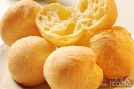

Pao de Queijo

Description
Try baking a South American mainstay – these light and fluffy cheese puffs are best served warm from the oven
Ingridients
- oil or butter, for the baking sheet
- 250ml whole milk
- 125g unsalted butter
- 1 tsp salt
- 300g tapioca flour
- 2 eggs
- 100g parmesan, grated
Method
- Heat the oven to 220C/200C fan/gas 7. Oil or butter a baking sheet and set aside.
- Heat the milk, butter and salt in a medium saucepan and bring to a boil. Remove from the heat and add the tapioca flour. Stir vigorously, then leave to cool a little.
- Pour the dough into a standing mix to beat the dough until its cool, or use a wooden spoon and beat by hand. Beat the eggs in one at a time, waiting until each is completely incorporated before adding the next. When the dough is glossy and mixed, add the parmesan. Beat again until mixed
- Spoon the dough onto the baking sheet in 1 tbsp balls, 5cm apart. Bake for 30 mins until crisp and golden. Remove from the oven and eat while still warm.